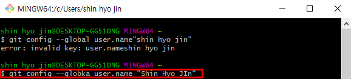
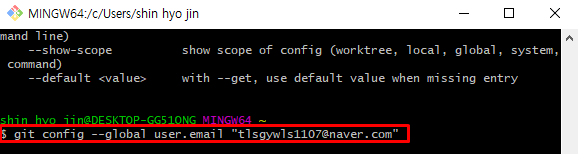
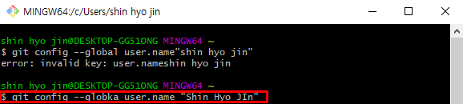
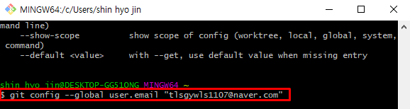

Git 설치 & 환경설정
- 구글에 git 검색해서 설치하기
- 설치 완료 후 Git bash 열기
-
git bash 에서 환결설정 하기
Step 1: 유저 이름 설정
git config --global user.name "hyooo11"

Step 2: 유저 이메일 설정
git config --global user.email "your_email"

Step 3: 정보 확인하기
git config --list

Step 1: 유저 이름 설정
git config --global user.name "hyooo11"

Step 2: 유저 이메일 설정
git config --global user.email "your_email"

Step 3: 정보 확인하기
git config --list